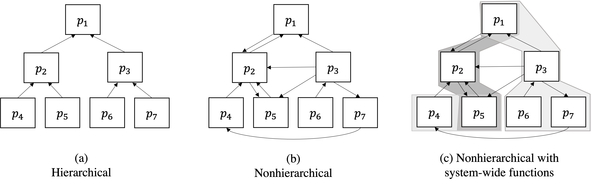
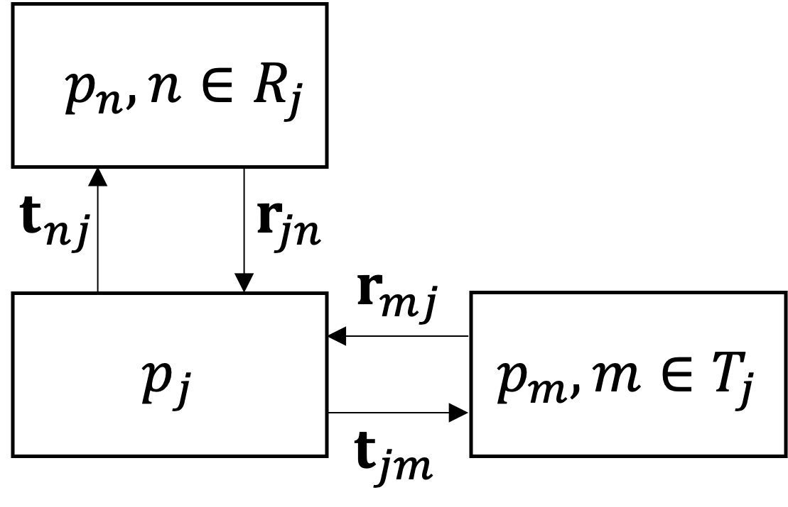
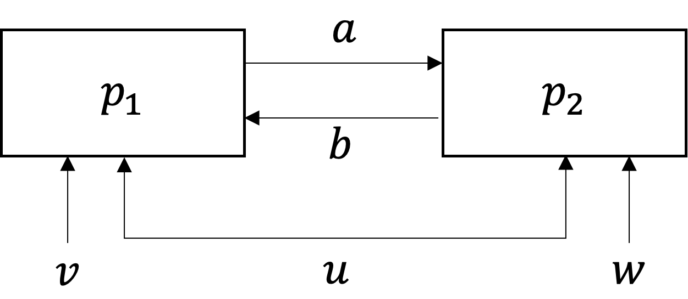

Background#
Engineering systems are often decomposable: an aircraft is designed by aerodynamics, structures, propulsion and performance teams, each with its own analysis codes and expertise. Optimizing the system as a whole requires accounting for the interactions between these disciplines (Figure 3) while letting each of them work with its own models, tools and design freedom. Distributed multidisciplinary design optimization (MDO) does this by decomposing the system design problem into subproblems, one per discipline or component, and coordinating their solutions so that the subproblem designs agree and are optimal for the system.

Figure 3 Interactions between the disciplines of a multidisciplinary system.#
Architectures for MDO#
MDO architectures are commonly divided into monolithic and distributed ones [Martins and Lambe, 2013]. Monolithic architectures solve a single optimization problem: the multidisciplinary feasible (MDF) architecture converges a multidisciplinary analysis (MDA) at every design point, and the individual discipline feasible (IDF) architecture adds the coupling variables to the optimization and enforces their consistency as equality constraints. Distributed architectures split the problem into subproblems that are solved separately and coordinated. Coordination methods include penalty-based decomposition [DeMiguel and Murray, 2006, DeMiguel and Nogales, 2008], bilevel integrated system synthesis [Sobieszczanski-Sobieski et al., 2000, Sobieszczanski-Sobieski et al., 2003], collaborative optimization [Braun, 1996, Braun et al., 1997, Lin, 2004, Roth and Kroo, 2008], quasi-separable decomposition [Haftka and Watson, 2005], and augmented Lagrangian coordination with the alternating direction method of multipliers (ADMM) [Tosserams et al., 2007, Tosserams et al., 2008, Tosserams et al., 2009].
DMDO implements analytical target cascading (ATC) in its nonhierarchical form (NHATC). According to the classification of Tosserams et al. [2009], ATC is an alternating method with closed design constraints and open consistency constraints: every subproblem satisfies its own constraints at every iteration, while the consistency between subproblems is reached only at convergence of the coordination.
When to use DMDO#
Solving one large MDO problem all-in-one works well when the MDA converges reliably and a single optimizer suits every discipline. A distributed approach such as DMDO is preferable when one or more of the following holds:
the MDA does not converge, or converges only slowly, for example because the disciplines are tightly coupled;
the disciplines are developed by different teams, with different codes or on different machines, and should keep their autonomy;
different disciplines call for different optimizers: derivative-free search for noisy or non-smooth simulations, gradient-based methods for smooth analytical models;
the all-in-one design space is too large for the optimizer that would have to handle it;
subproblems can be solved in parallel, which a single sequential optimization cannot exploit.
Analytical target cascading#
ATC was introduced to translate system-level design targets into design specifications for the subsystems (components) that make up the system [Michelena et al., 1999, Kim et al., 2003]. Targets are cascaded through a hierarchical decomposition: a subproblem sets targets for its children and computes responses to the targets it receives from its parent (Figure 4). Each subproblem minimizes the deviations between its target-response pairs while satisfying its local design constraints [Tosserams et al., 2010].

Figure 4 Target-response coupling between a parent subproblem \(p_{i}\) and its child \(p_{j}\).#
Definition 1 (Targets and responses)
Let the subproblem \(p_{ij}\) at level \(i\) be the parent of the subproblems \(p_{(i+1)k},\ k \in \mathcal{C}_{ij}\). The design targets \(\mathbf{t}_{(i+1)k}\) are computed by \(p_{ij}\) and sent to its children; in turn, the children compute responses \(\mathbf{r}_{(i+1)k}\) and return them to \(p_{ij}\).
Responses of higher-level components depend on responses of lower-level components, and ATC minimizes the gap between what higher levels require and what lower levels can achieve. With the consistency constraints \(\mathbf{c}_{ij} = \mathbf{t}_{ij} - \mathbf{r}_{ij} = \mathbf{0}\) relaxed by a penalty function \(\phi\), the hierarchical ATC subproblem reads
where \(\mathbf{x}_{ij}\) are the local design variables, \(f_{ij}\) the local objective, \(\mathbf{g}_{ij}\) and \(\mathbf{h}_{ij}\) the local constraints and \(\mathbf{a}_{ij}\) the analyses that compute the responses. A local objective and local constraints are not required by the ATC process.
The hierarchical formulation allows negotiation only between parents and children. Many MDO problems have no such hierarchy: their analyses exchange data in loops, and system-wide quantities such as mass, cost or power depend on the variables of several subproblems (Figure 5). Coordinating them with hierarchical ATC requires at least as many artificial target-response pairs as there are subproblems.


Figure 5 Functional dependence of the hierarchical and nonhierarchical formulations. Arrows show the flow of responses; shaded boxes show system-wide functions that depend on the variables of several subproblems.#
Nonhierarchical ATC#
NHATC [Tosserams et al., 2010] lets any subproblem send targets to, and receive targets from, any other subproblem, its neighbors. The level index is dropped and the two indices of a quantity denote the sender and the receiver.
Definition 2 (Neighbors)
Let \(\mathcal{T}_{j}\) be the set of neighbors for which subproblem \(j\) sets targets, and \(\mathcal{R}_{j} = \{ n : j \in \mathcal{T}_{n} \}\) the set of neighbors from which it receives targets, that is, for which it computes responses. \(\mathbf{t}_{nj}\) are the targets that \(j\) receives from \(n\), and \(\mathbf{r}_{jn}\) the responses that \(j\) computes to match them.


Figure 6 Nonhierarchical target and response flow between subproblem \(j\) and its neighbors.#
Subproblem \(j\) has two sets of consistency constraints, \(\mathbf{c}_{nj} = \mathbf{t}_{nj} - \mathbf{r}_{jn} = \mathbf{0}\) for \(n \in \mathcal{R}_{j}\), and \(\mathbf{c}_{jm} = \mathbf{t}_{jm} - \mathbf{r}_{mj} = \mathbf{0}\) for \(m \in \mathcal{T}_{j}\). The NHATC subproblem is
where \(\mathbf{S}_{jn}\) selects the components of the analysis outputs that are sent to neighbor \(n\).
In DMDO terms, every shared or coupling quantity has one copy per subproblem that uses it (a row of the
variables table, see Getting started), and each pair of linked copies forms a target-response pair.
Augmented Lagrangian coordination#
Inconsistencies#
The links between copies are collected in a linker matrix whose columns pair the index of a copy with the index of the copy it is linked to (Algorithm 1). For every link \(l\) between copies \(i\) and \(j\), the scaled inconsistency is
with one entry per component for vector-valued variables, and \(q_{l} \in \{0, 1\}\) (equal or not) for categorical ones. By default the scale factors are \(\sigma_{i} = 0.1 / (u_{i} - \ell_{i})\), from the bounds of each copy, so that couplings of very different magnitudes weigh comparably; a single constant can be given instead. The inconsistencies of all links form the vector \(\mathbf{q} \in \mathbb{R}^{n_q}\).
Penalty function#
The consistency constraints \(\mathbf{q} = \mathbf{0}\) are relaxed with the augmented Lagrangian penalty
where \(\mathbf{v}\) are the Lagrange multiplier estimates, \(\mathbf{w}\) the penalty weights and \(\circ\) the entrywise (Hadamard) product. When subproblem \(j\) is solved, the penalty is summed over the links that involve its copies, and the subproblem minimizes
subject to its local constraints, with the copies held by the other subproblems fixed at their latest values. The subproblem that holds the system objective is the master subproblem; the others usually have no local objective.
Method of multipliers#
The coordinator updates the penalty parameters after each outer iteration \(t\), following the method of multipliers [Bertsekas, 1982]:
and grows the penalty weights of the links that do not make enough progress:
where \(q^{t-1}\) are the inconsistencies at the start of the outer iteration and the exponent \(e_{l}\)
depends on the update scheme (M_update_scheme). Starting values are \(\mathbf{v}^{0} = \mathbf{0}\) and
\(\mathbf{w}^{0} = \mathbf{1}\).
Scheme |
Exponent \(e_{l}\) for a stalled link \(l\) |
|---|---|
|
\(1\): every stalled link grows by \(\beta\). |
|
\(\kappa\) if \(|q_{l}| \ge \operatorname{median}(|\mathbf{q}|)\), else \(0\): only the stalled links with above-median inconsistency grow (\(\kappa = 2\) by default). |
|
\(n_{q}\) for the stalled link(s) with the largest inconsistency, else \(0\). |
|
\(2\,\rho_{l} / \max_{k} \rho_{k}\), where \(\rho_{l}\) is the rank of \(q_{l}\): larger inconsistencies grow faster. |
Growing the weights only where consistency stalls keeps the penalty small on couplings that converge on their own, which preserves the conditioning of the subproblems; the multipliers \(\mathbf{v}\) let the coordination reach consistency without driving the weights to infinity [Tosserams et al., 2008, Boyd et al., 2011].
The coordination loop#
One outer iteration solves every subproblem once (the inner loop) and then updates the coordinator. Two sweep orders are available:
- Gauss–Seidel
Subproblems are solved one after the other. Each one starts from the copies updated by the previous solves of the same outer iteration, which usually reduces the number of outer iterations.
- Jacobi
All subproblems start from the same snapshot of the coordinator, in which the copies of each linked group are first set to their mean. Each subproblem then evaluates its penalty on the inconsistency shifted by \(\delta_{l} = -v_{l}/(2w_{l}^{2}) - \bar{q}_{l}\), where \(\bar{q}_{l}\) is the inconsistency of the averaged snapshot; this is the scaled form of the augmented Lagrangian used by consensus ADMM [Boyd et al., 2011]. The subproblems can be solved concurrently; their results are then merged in subproblem order, each subproblem contributing the copies it owns, so the outcome does not depend on the order in which the solves finish.
The run stops when the maximum inconsistency is below inc_stop and no longer changes, when the maximum
inconsistency has not improved for noprogress_stop outer iterations, or when the outer-iteration budget is
exhausted.
Note
In the default configuration DMDO applies the multiplier update (7)–(8) twice per outer iteration: once right after the inner loop and once after the iteration has been recorded. Both updates use the inconsistencies of the same inner loop, so a stalled link can grow by up to \(\beta^{2e_{l}}\) per outer iteration. The benchmark results in Benchmarking were obtained with this behavior.
Example: the basic problem#
The basic problem of Getting started,
has the workflow of Figure 7 and is partitioned into two subproblems that each keep copies of \(u\), \(a\) and \(b\):


Figure 7 Workflow of the basic problem.#
Subproblem 1 holds the system objective (it is the master subproblem). Subproblem 2 has no local objective: it only tries to match the targets of subproblem 1 while satisfying its constraint. As the penalty weights grow on the links that stall, the copies are pushed together and the two subproblems converge to a consistent design.